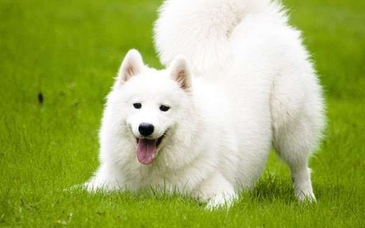

Pet Channel
| ซามอยด์ (Samoyed) |
|  |
ลักษณะทั่วไป โดยธรรมชาติแล้ว ซามอยด์เป็นสุนัขที่เลี้ยงไว้เพื่อใช้งาน มีความแข็งแรง กระตือรือร้นและตื่นตัว ดูแตกต่างจากรูปลักษณ์ภายนอกออกจะสวยและสง่างาม ขนหนาเหมาะกับอากาศหนาว สีขนมีทั้งสีขาวบริสุทธิ์ สีขาวผสมขนมปังกรอบ สีครีม หรือสีขนมปังกรอบ ซามอยด์เป็นที่รู้จักกันดีว่ามีริมฝีปากดำ หยักนิดๆ ที่มุมปาก จนได้รับขนานนาม “รอยยิ้มซามอยด์” ซามอยด์เพศผู้จะมีช่วงหลังไม่ยาวนักเพราะความยาวที่มากจะทำให้หลังอ่อนแอ บาดเจ็บได้ง่าย แล้วด้วยเหตุนี้เอง พวกเขาจึงไม่ค่อยเหมาะกับการทำงานที่หนักหน่วงจนเกินไป แต่สำหรับเพศเมียช่วงหลังจะยาวกว่าเพศผู้นิดหน่อย พวกเขามีความสามารถทั้งในเรื่องของการลากเลื่อน การจูงลากดึงของที่มีน้ำหนัก ต้อนสัตว์ หรือแม้แต่แบกของให้แต่นักไต่เขา มีอายุได้ถึง 12-14 ปี |